关于ENVI（.hdr+.img）、.mat、.tif的一些理解
关于ENVI（.hdr+.img）、.mat、.tif的一些理解
原文作者：Akari00000
原文链接：https://blog.csdn.net/zx74196870/article/details/130213171
书接上篇博客c++ envi（.hdr+.img）图像转换成tiff格式 纯c++
这是一些关于这几个格式的一些探索研究，萌新的探索之旅
写在前面
研究这几个格式的初衷是为了解决读的问题，这个时期的我完全不懂格式是什么意思。
通过mulitbanread（）函数，我可以实现MATLAB读写ENVI，把ENVI转换成.mat，我的.mat是一个三维矩阵，我能不能看到mat是什么样的数据组成呢？
说到底我只知道ENVI是.hdr+.img，hdr这么小，应该是放不下数据了，如果img装了数据，是怎么装的呢？
我是否有一个手段来验证multibandread（）转换的.mat正确与否？此时的我还不会使用二进制阅读器
此时我的目标是用c++调用multibandread（），所以我要通过.mat来研究.img，我要知道

函数的形参怎么填
对.mat和ENVI的探索
HDR
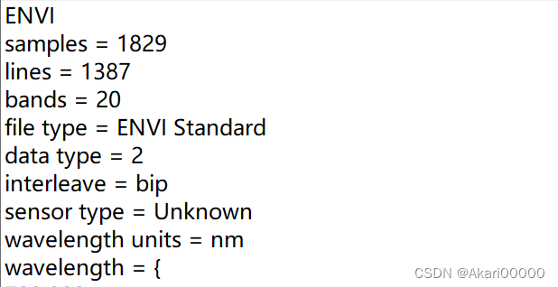
ENVI参数是：
行：1387
列：1829
波段数：20
数据字节数：2
数据存储格式：BIP
BIP是个啥玩意呢，我一开始也是懵逼的，网上看了很多文档，只看文字我压根看不懂。好在找到一个大佬的文章，有图！遥感图像通用数据格式（BSQ\BIL\BIP）的理解，这里我直接截图关键部分
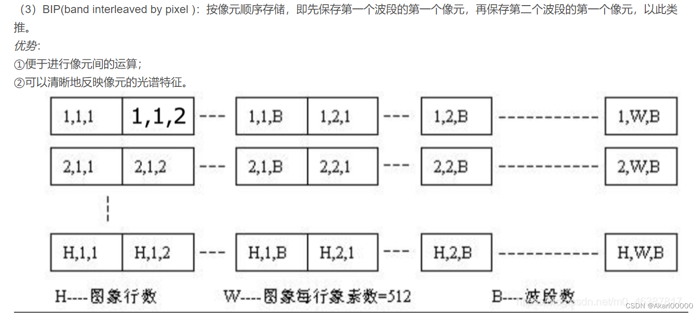
通过阅读ENVI图像的文档ANALYZE7.5得知，.img存储的是简单的数据（2字节）
那我的.img的存储顺序是什么呢，以数学上的二维矩阵举例，如下图

把上图想象成一个由1829个“小矩阵”拼成的大矩阵
我们知道，无论几位矩阵，在内存里的存储都是连续存储，通过c++遍历输出.img，得知.img存储的短整型数据的每个数字大小，5000~20000的数字（也可以通过二进制阅读器查看）。
那mat做了什么呢？怎么转换我的数据块的？
multibanread（）转换
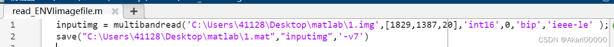
结果
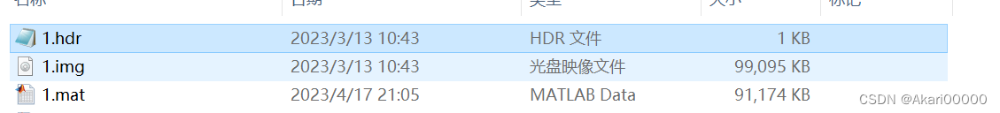
无法显示，数据量太大
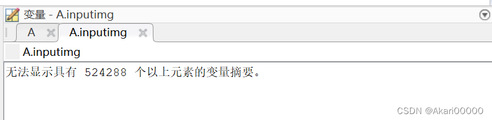
load（），输出1第一行
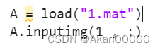
结果可知，mat是个三维数组（废话
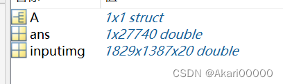
mat行：1829
mat列：1387
mat波段数：20
按照mat的理解应该是 1829 （行） （1387 20）（列）
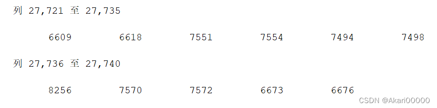
matlab的第一行有27740个元素，27740 = 1387 * 20
mat数据排布，20个“小矩阵”拼成的“大矩阵”
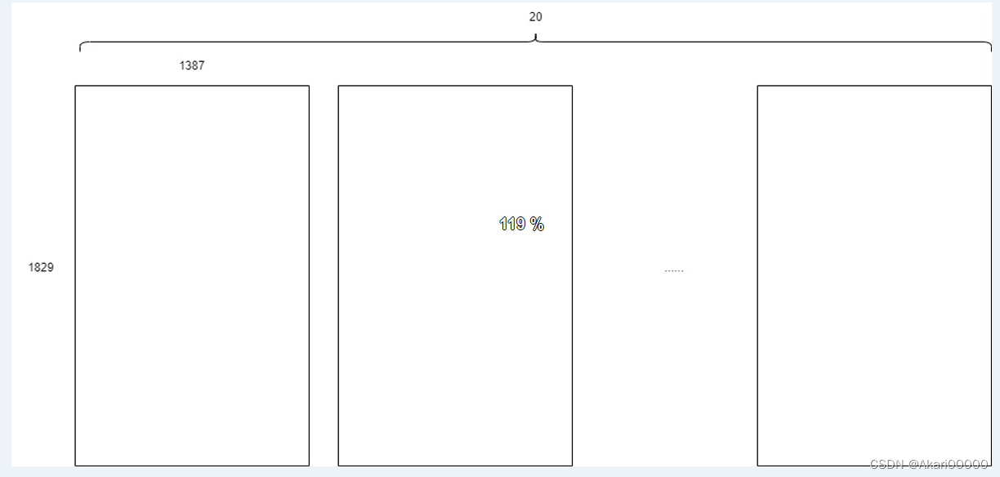
与.img数据排布
对比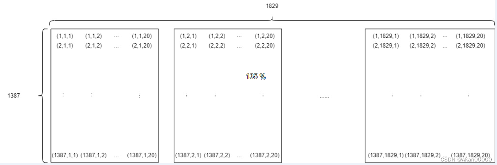
然后发现个严肃的问题，我TM img不是这么排的啊？.mat是怎么存储我的每一个数据的呢？27740 = 1387 20，20我可以理解为是20个波段，1387是img的1387行，这时候我做出了一个假设，有没有可能，.mat是在按波段数存储呢？每张图片是18291387，存储了20个波段。这样的存储排布，就是上图的“20张图”。
我现在需要通过我的.img，得到20张（18291387）的图像。img的数据源是1829张（138720）图像，把每个数据块（小矩阵）想象成一个数据平面。接下来，我会做出一个“错误”的想象，方便理解，假设数据在内存空间里可以做到立体存储，这个三维数组就可以想象成一个长方体。假设我把每个数据平面叠在一起，就会得到个“立体存储空间”，这样就可以拼凑出一个一个棱长是1829,1387,20的长方体了
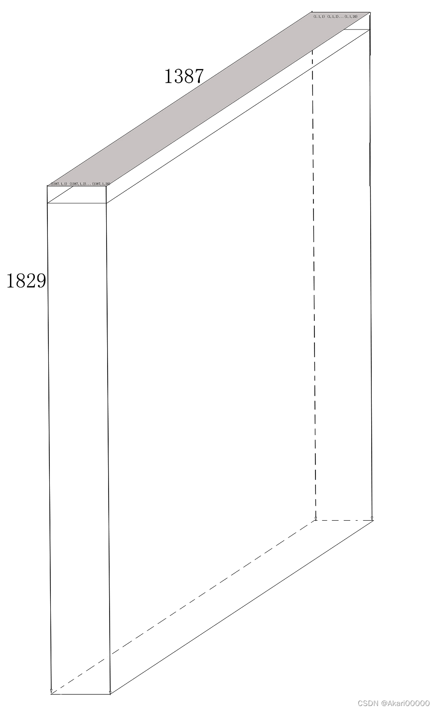
沿着左侧面“切”一刀，正好可以“切”20刀，第一个侧面（小矩阵）如图
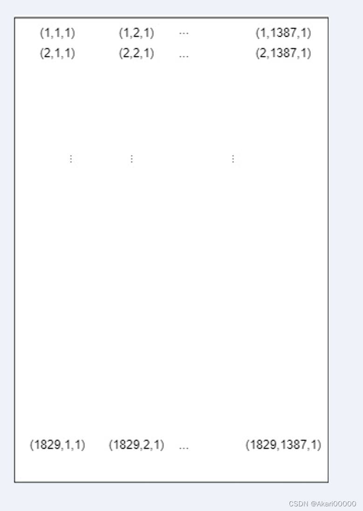
长1387，宽1829，这不是很眼熟了呢？
把每个侧面拼在一起（20个小矩阵拼在一起）
得到一个宽1829，长1387*20的“大矩阵”数据
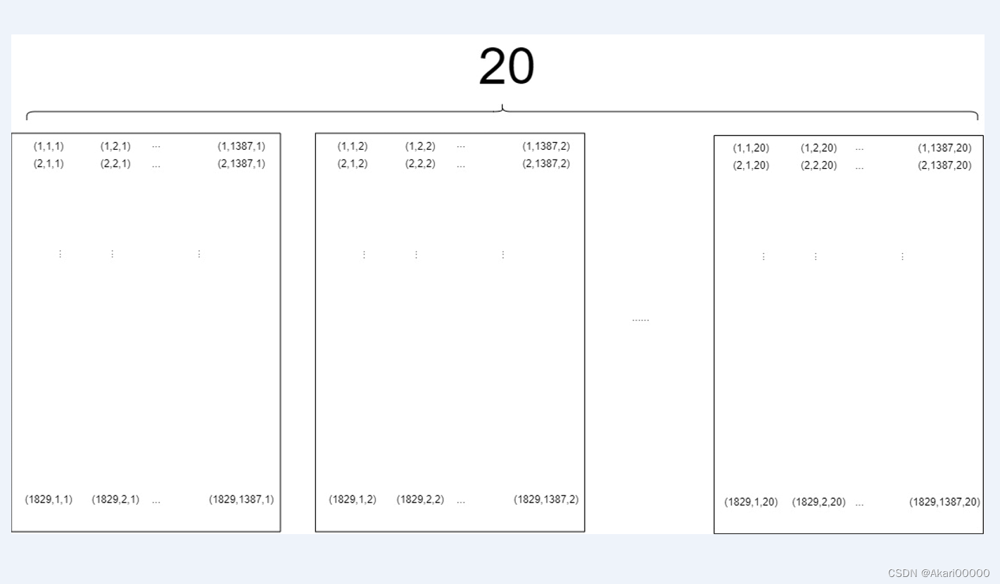
与.img的数据排布进行对比
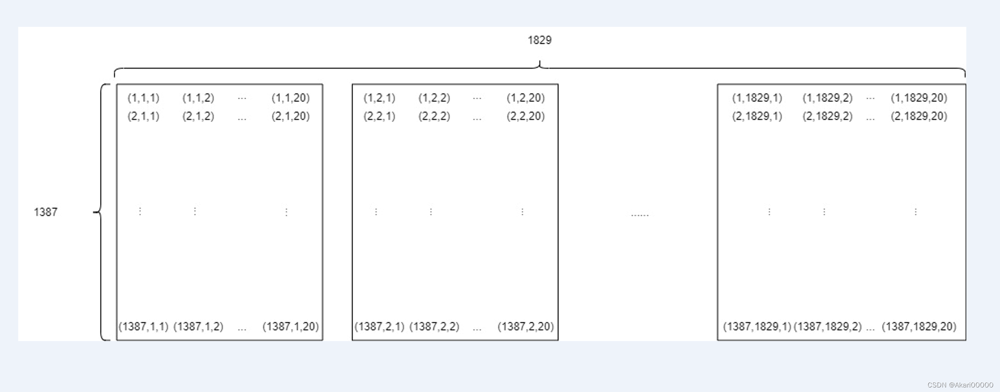
根据这个假设得到一个假定数据排列顺序，假定结论：.mat把.img的矩阵数据按照波段存储。接下来就是验证.mat是不是把.img的数据这么存储的
用c++和matlab，索引相同坐标下的5个数据，
代码如图
c++
1 | |
结果
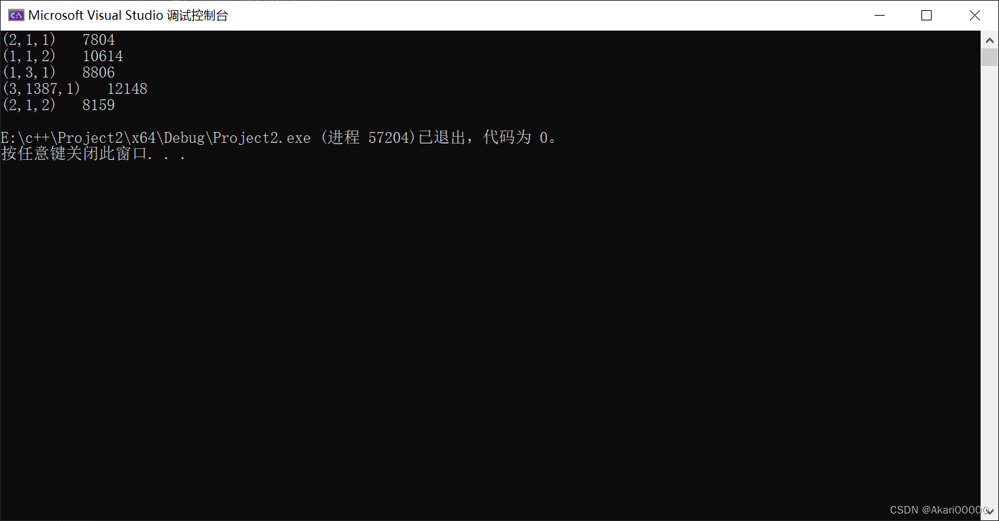
matlab
1 | |
结果
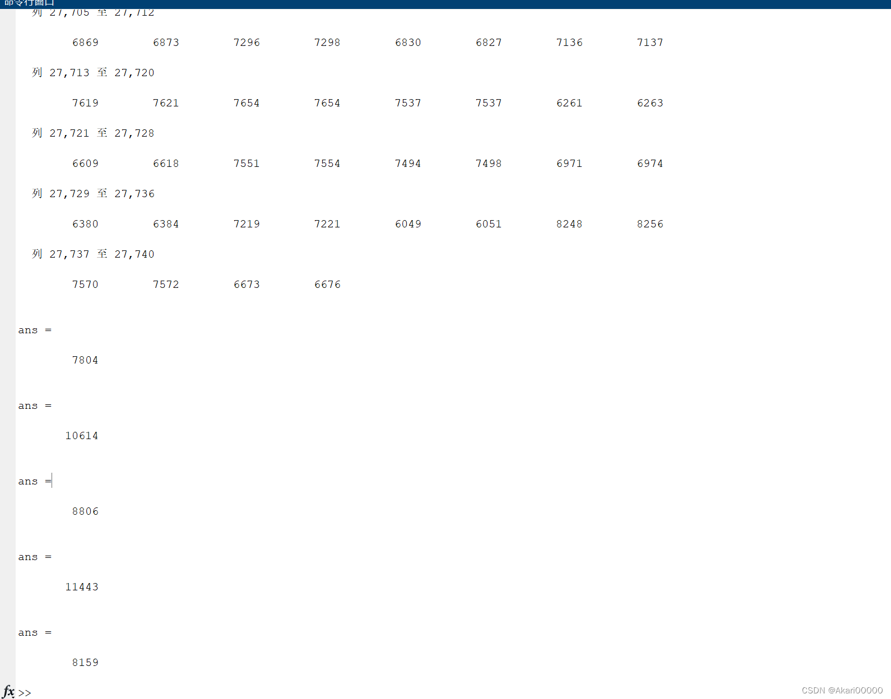
c++和matlab的输出结果一致，所以.mat的排布如图所示
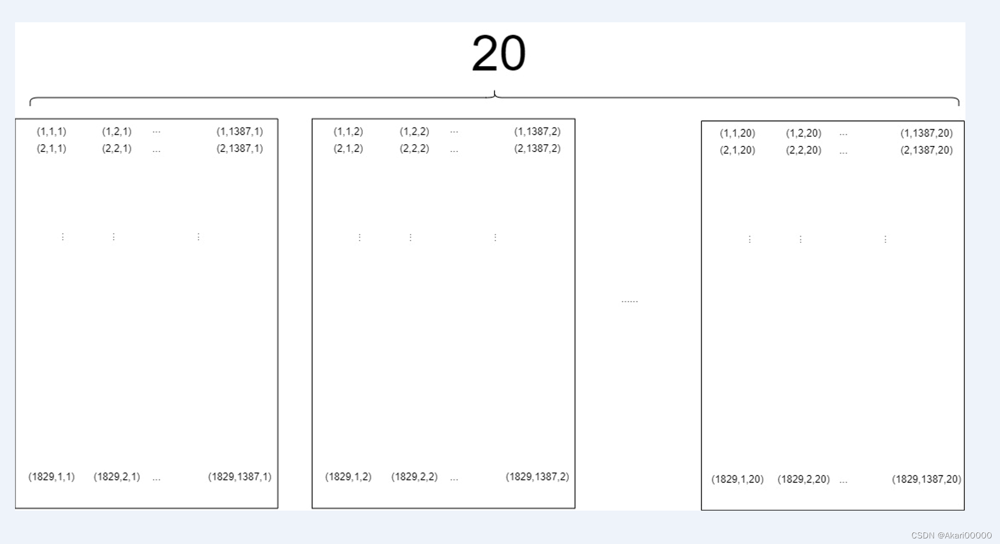
所以我可以通过.mat来验证.img的数据，也证明了.mat封装的数据没问题（有兴趣可以多试几个，我的想法有问题的话麻烦指出~）
结论：.mat把.img的数据按波段，按列顺序存储
还有一种理解，用存储顺序来理解
.img
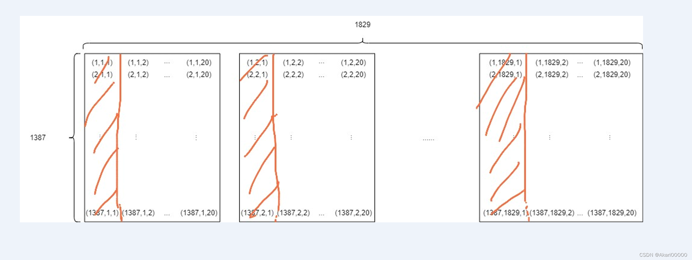
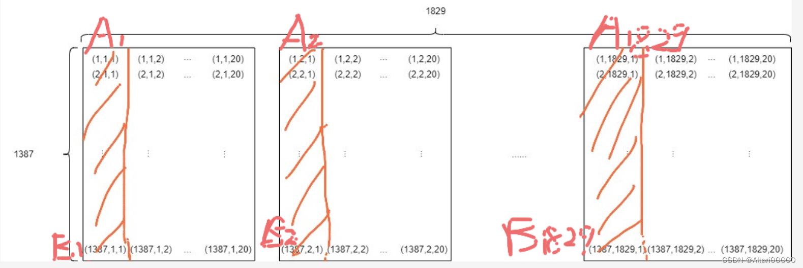
A、B分别代表相对位置，以下为.mat存储几何示意图（1个小矩阵）
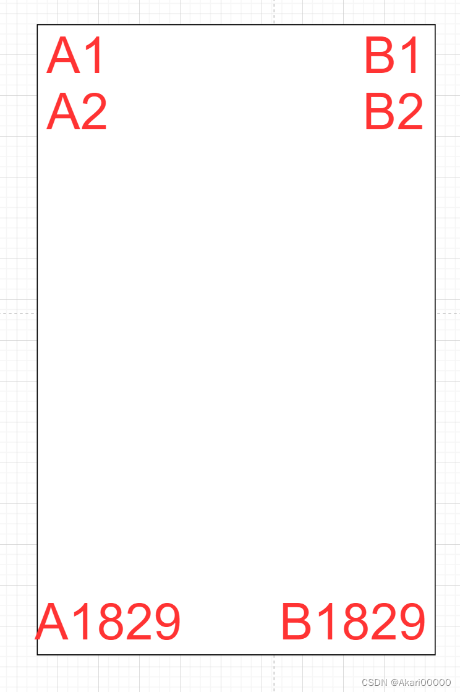
所以.mat可以看做20个宽1829，长1387的矩阵组合成的大“二维矩阵”
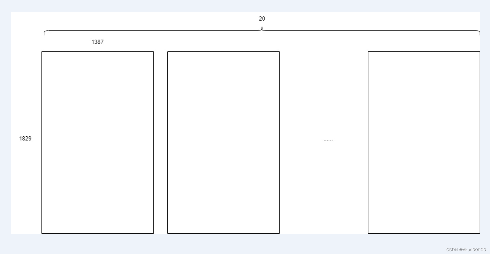
.mat的存储逻辑示意图（A1 -> B1829为一个矩阵，地址由小到大）：
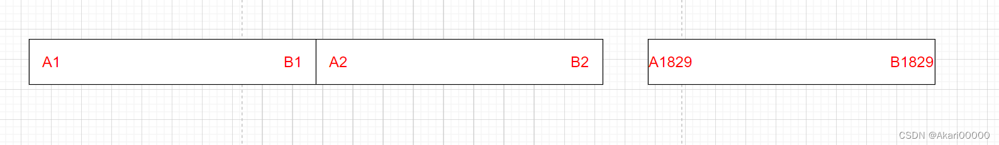
即先存储.img每个矩阵的第一列,第一列A1 -> B1 -> A2 -> B2 -> … -> A1829 - >B1829。
即 逐列存储，之前在一个文档上印证过这个想法…现在找不到了
总结：.img转.mat两个格式逻辑排布，我想了4天，包括在写这个文档的时候，我还能想错，实在是太乱了，容易错。我认为思考这个问题的关键点有两点：1. 从数学逻辑思考（类似存储逻辑）2.从几何逻辑思考 3.从存储逻辑思考
啥，你问我这玩意有啥用…….我只能说，这时候的我认为有用，而且这时我还被批评：4天你就干了个这？
好吧我承认我确实工作进度很慢，菜是这样的。不过这也为我未来研究tiff格式打好了基础，这更新了我的思维逻辑，从数据的存储结构去想问题。未来这个存储结构，我会用在c++转.mat的项目上。
说个有意思的事，我花了4天才搞明白的结构，给一个老师讲，半个小时就讲通了……………不得不感慨，人与人之间的差距是巨大的QAQ，老师还是牛。
对了，以上的说法均默认行存储，如果是列存储或者“Z”存储就不适用。
对tiff的研究
其实我看tiff的时候还算顺利，花了两天（）
网上有很多关于tiff的教程，啥都不懂的时候去看看是挺好的。但是最大的问题，网上应该几乎找不到和自己相同的案例吧。所以我认为看格式文档是最关键的，网上的教程只是帮你入门，文档才帮助你学明白的关键。
对tiff分析的关键，是第一个ifdoffset，从而分析IFD，以下是我学习的时候自己做的分析笔记，该tiff通过enviclassic转换
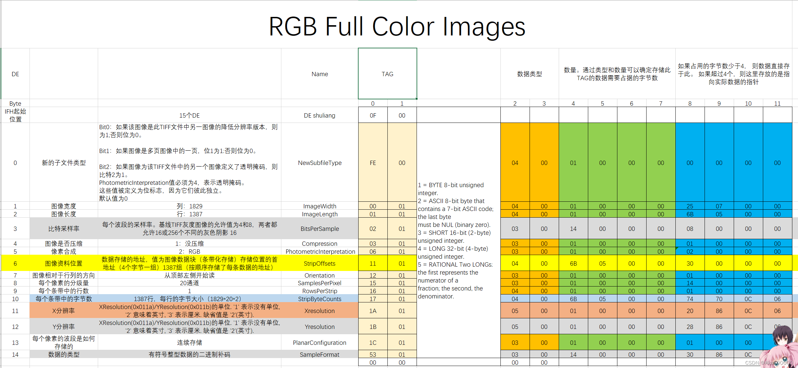
堆着tiff文档，一个一个分析自己的TIFF。我的图像只有一个IFD，多IFD按照TIFF文档的要求分析就好。
分享
envi、tiff格式的文档以及我自己做的我的tiff的分析
ANALYZE75、TIFF6、TIFF格式的文档。
链接：https://pan.baidu.com/s/1kaRVsAJysAkLS-S0dqW2rg
提取码：2nrn
写在后面
花了7天干出了个这，我也觉得自己很慢。不过还是受益匪浅，感觉自己对数据结构有了一点点了解。换成大佬来，这估计是个很简单的问题吧（）。
如果未来要做c++ envi转.mat，感觉有了一点点思路：）